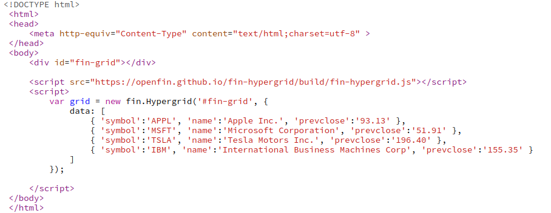
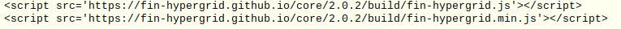

fin-hypergrid is an ultra-fast HTML5 grid presentation layer, achieving its speed by rendering (in a canvas tag) only the currently visible portion of your (virtual) grid, thus avoiding the latency and life-cycle issues of building, walking, and
maintaining a complex DOM structure.Below is an example custom application built ontop of the Hypergrid API tooling. It also highlights a DOM based custom external editor triggered via hypergrid events as well as interaction with Hypergrid's
column ordering API.

The following examples demonstrate setting up a Hypergrid that you can embed. Keep in mind that you can have multiple grids on a page. Initializing the grid is as simple as providing the CSS selector for HTML element to contain the grid. Binding
data is as simple as providing a congruent array of objects.

Remember to put this line of script in the head of the HTML document so that your hypergrid will be working and functioning correctly.
00x;">